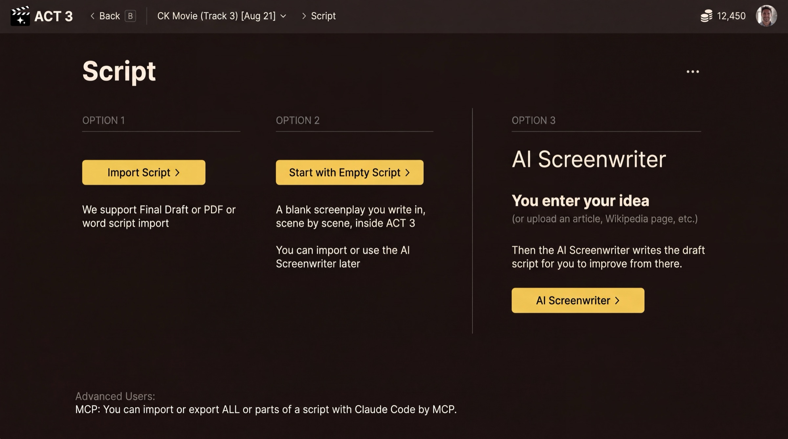

Step 3 of 7
Choose Empty Script
Decide how your script arrives. The Script page offers three options. Click Start with Empty Script, or press 2.

What this page is
The Script page is a fork with three ways in. Nothing on this page spends credits.
Your decision
- Option 1, Import Script: you already have a screenplay (Final Draft, PDF or Word). See guide 2.
- Option 2, Start with Empty Script: you will write the screenplay yourself, scene by scene, inside ACT 3 AI. This guide.
- Option 3, AI Screenwriter: you give an idea and the AI writes the draft. See guide 4.
Pick Option 2 when the story is in your head, when you want to type it in your own words, or when you want to set up the look first and write later. Nothing is locked in: you can import a script or use the AI Screenwriter later, from inside the project.
Pressing Start with Empty Script › gives the project a blank screenplay and moves you straight on. Nothing is uploaded.
Why you go next to Visual Options
An empty script has nothing to break down into beats, scenes and shots yet, so the wizard skips the import steps and goes to the look of the film.